手搓魔法：从小火球到灭世禁咒 · 11-06 优化与预约素材评审
核心玩法、数值、规则一律未改，只动了剧情、表现、反馈和 UI。测试 707/707 通过。
测试包二维码（含本页全部改动）：

一、美术 · 剧情（美术总监 / 剧情总监）
克洛伊 CG 统一重画 + 其他剧情 CG 优化（左旧 右新）
全部回到守关者立绘同一条 NovelAI 管线（同风格词 + 微弱余烬轮廓光），在原构图上精修，人物造型与新立绘一致。
克洛伊 · 前世（雷恩以新造型出现在台阶上）
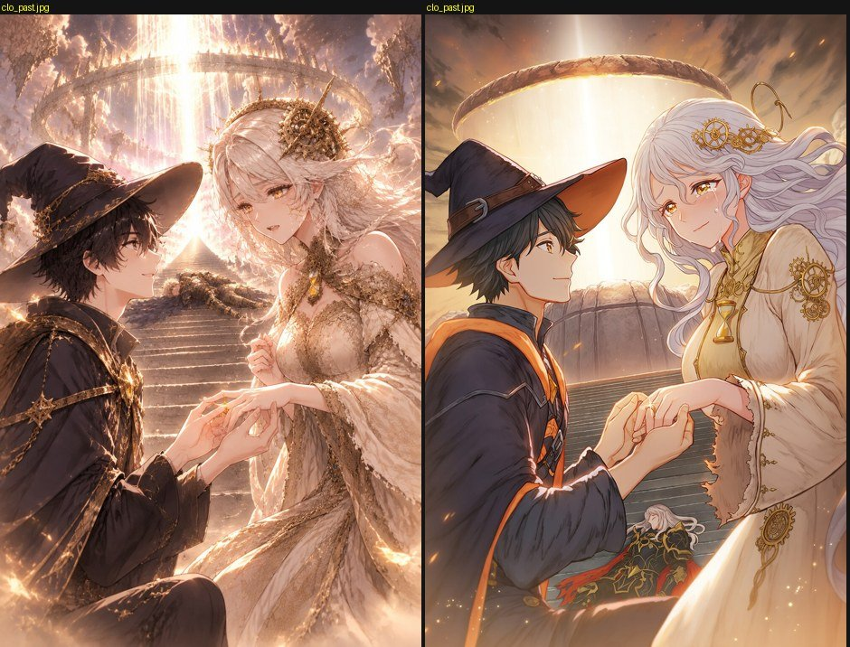
克洛伊 · 誓约 1
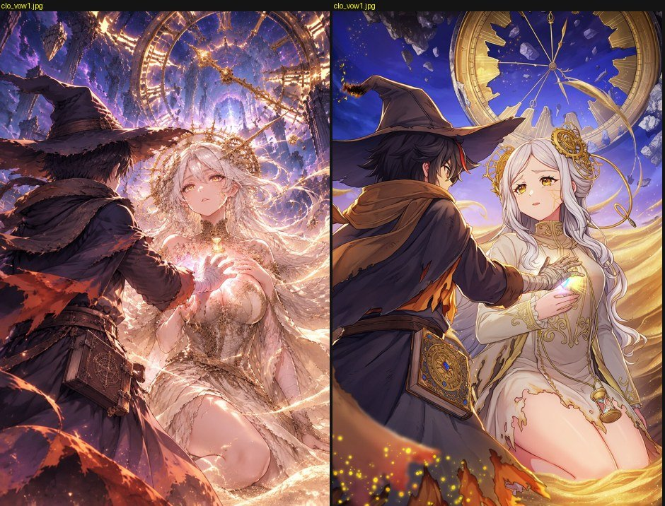
克洛伊 · 誓约 2（戴戒指）
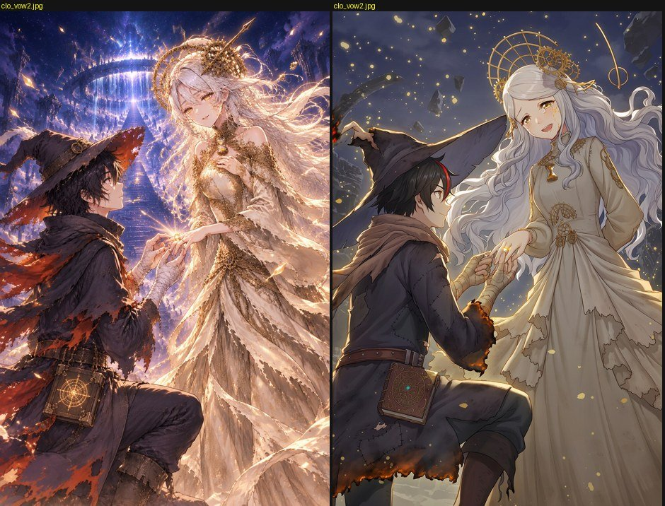
克洛伊 · 誓约 3（告别）
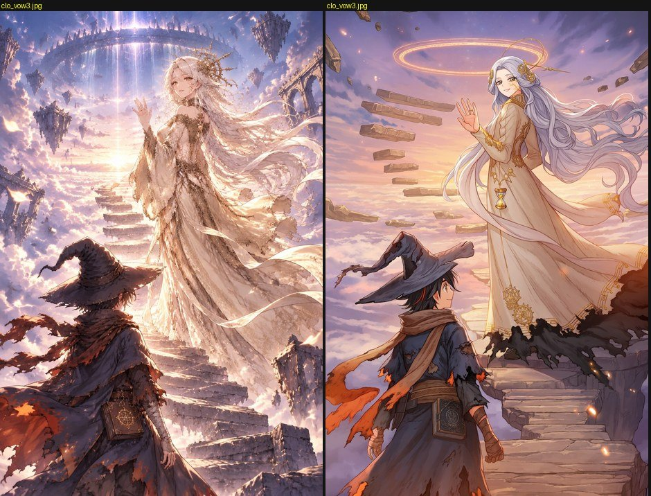
结局 · 继续
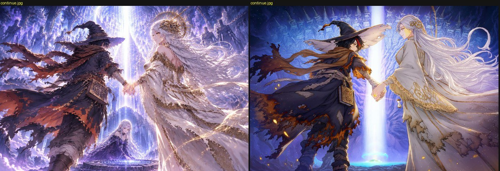
结局 · 终
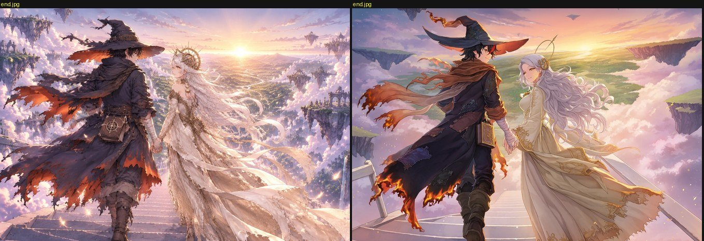
守泉人 · 最后 1
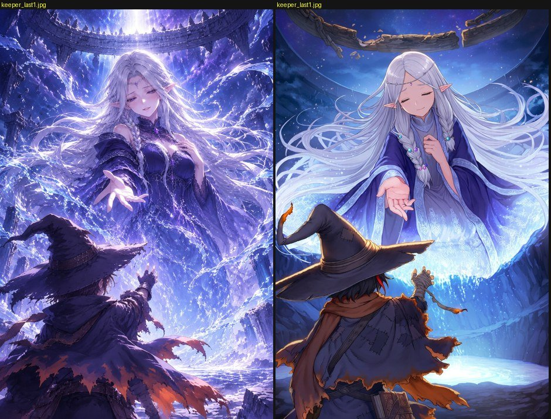
守泉人 · 最后 2
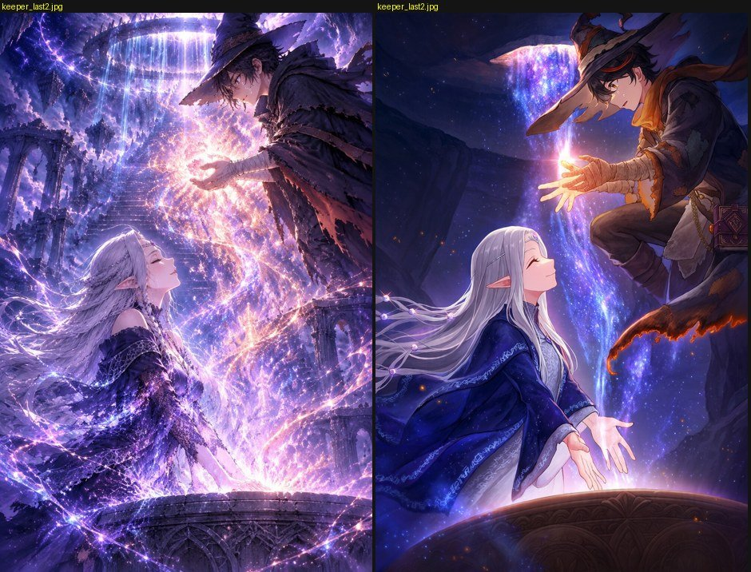
结局 · 新世界（薇丝塔睁开含泪的眼）
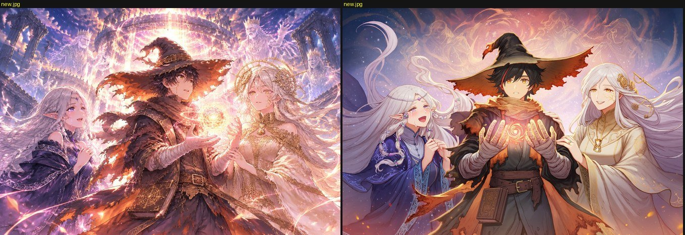
新增：断章 1–7 每关一张「战后」插图（原来是模糊的战斗背景）
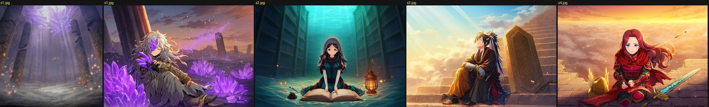
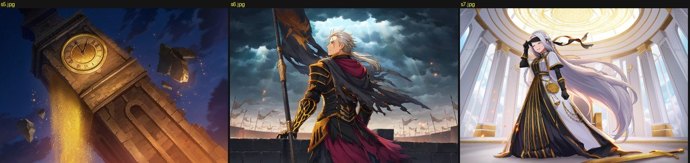
剧情修正
- 克洛伊与「三百年前那一夜」：典籍和前世剧情互相矛盾，统一为「律令先点了她，她拒绝，诅咒才选中雷恩；她以戒指守护者身份护送他」，她那句「这本来就是我欠的」有了分量，并为第 8 关揭示埋线。
- 薇丝塔几处时间线和戒指方向写反的台词修正；断章 7「古道」→「天阶」；三件道具描述与剧情矛盾处修正；副团长披风颜色与立绘统一。
- 节奏：打败巴尔德温、菲奥娜、雷恩之后薇丝塔原来没话说，各补一段短台词（已配音）；断章 8 从「战前预告」改为「战后余波」。
- 手机可读性：薇丝塔 4 句 26–39 字的长台词拆短。
- 断章和结局全部配音：旁白念叙述，引号里的话由雷恩 / 薇丝塔 / 克洛伊本人说，原声线不变（共 109 条）。
需要你定的（美术总监提议，未做）
- 营地和两张 UI 里的守泉人是睁眼的，但设定是盲眼。可以重画脸部（约 150 Anlas），营地那张脸是你当初选的，所以先问你。
- 阿斯特里昂领口宝石是红蓝绿金，世界四元素是红蓝黄黑，要不要改（约 50 Anlas）。
- 精英怪「雷枪战斗法师」设定写「他」、立绘像男性，配音却是女声：改用男声重配 3 句，还是把设定改成「她」？
二、打击感与反馈（战斗策划）
- 修 bug 屏幕震动在第一次击杀后一直保持最大幅度（之后所有小震动都像击杀）→ 已从根上修好。
- 魔攻 / 增幅计数器：法器光球现在飞进计数器，每一下都弹跳闪光，×增幅 带回弹和更长的白闪，看得出 9→18→54 是怎么来的。
- 蓄力 → 出手 → 命中 拆成三拍：搓手蓄力音 → 出手瞬间喊咒名和呼啸 → 命中（原来四个声音同一帧响）。命中时间点不变。
- 12 系元素各自的命中音（火、水、风、土、冰、雷、圣、奥术），连击音高递增，重击 / 击杀叠低频；中级以上命中手机震动，初级保持克制。
- 斩杀预告：选牌够斩杀时血条末端一圈光爆 + 提示音 + 轻震。
- 被致命魔法命中：屏幕边缘红闪、施放按钮震一下、受伤音，最后一击短暂定帧 + 重震。
- 选牌每张音高递增；第 6 张被拒有音效、卡牌抖动和轻震。
- 战斗 HUD：地区名横幅不再挡守关者的脸；「选 1–5 张元素卡」提示更大更亮；魔攻 / 增幅 标签更清楚；致命魔法小字加底板；点数 / 元素排序做成开关样式。
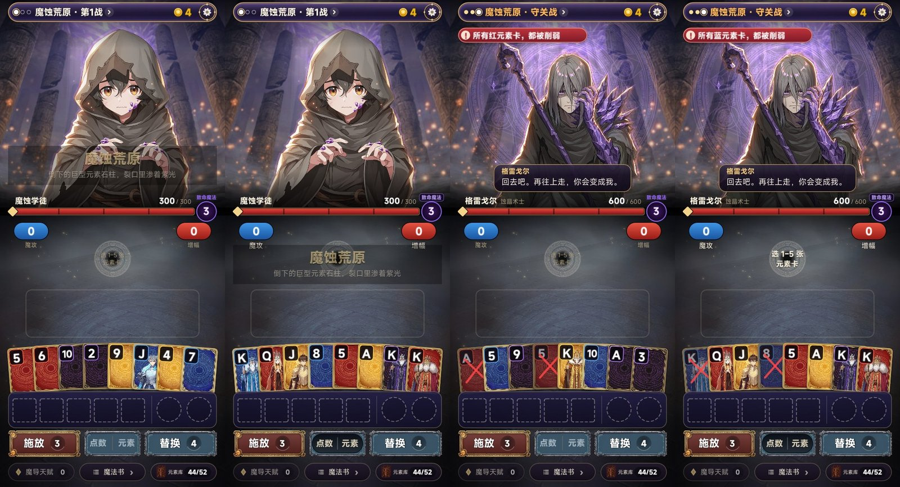
左→右：第一战 改前 / 改后，守关战 改前 / 改后
待你决定：① 4 件法器时一手约 7.5 秒，第 3 手之后要不要自动加速结算；② 咒名喊声同一场第二次起要不要降低频率。两项都涉及你之前定的节奏，未改。
三、UI（UI 总监）
- 标题页换成完整两行字标「手搓魔法 / 从小火球到灭世禁咒」，已避开胶囊；开场副标题同步。
- 换屏淡入，不再硬切；按钮按下变暗 + 发光；文字超宽自动缩小（修好排行榜「第8世 登顶流派」）；弹窗 ✕ 点击区放大。
- 咒谱码弹窗提示溢出、设置页 100% 被滑块挡、成就锁定文字看不清、登顶记录空行、结算按钮位置、商店气泡挡标签、旧游戏遗留文案「送给女主」等一批问题已修。
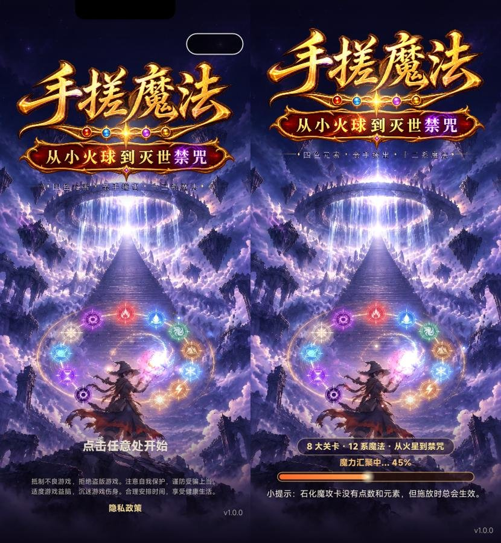
四、预约 / 上线素材
资料标题：手搓魔法：从小火球到灭世禁咒 分类：卡牌 分发：安卓 / iOS 预约，预计「2026年11月」上线。
隐私政策（标题一字不差）：shoucuo/privacy.html
字标（三选一，已选 B：火球橙光 → 禁咒紫光，体现成长）
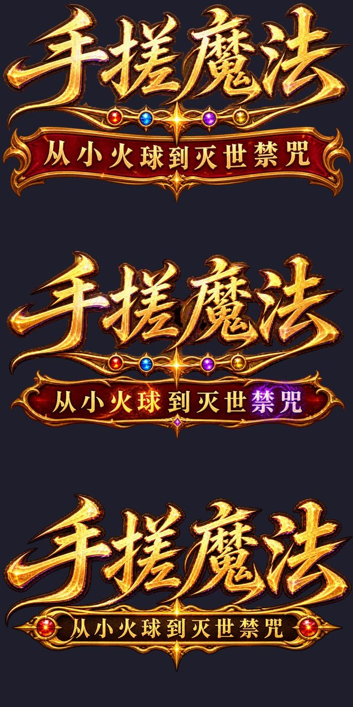
图标
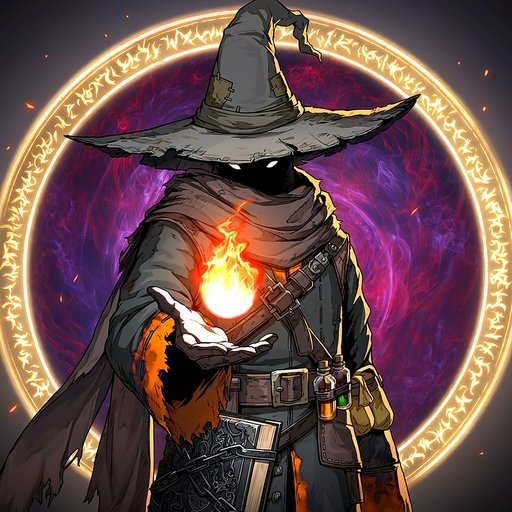
宣传图 16:9（2560×1440）
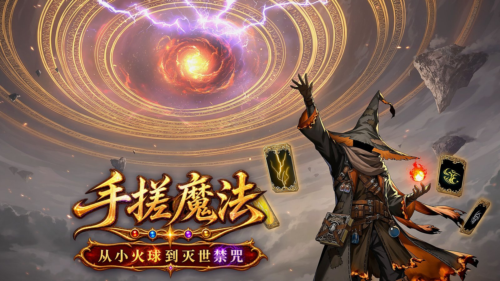
宣传图 1:1（1600×1600）
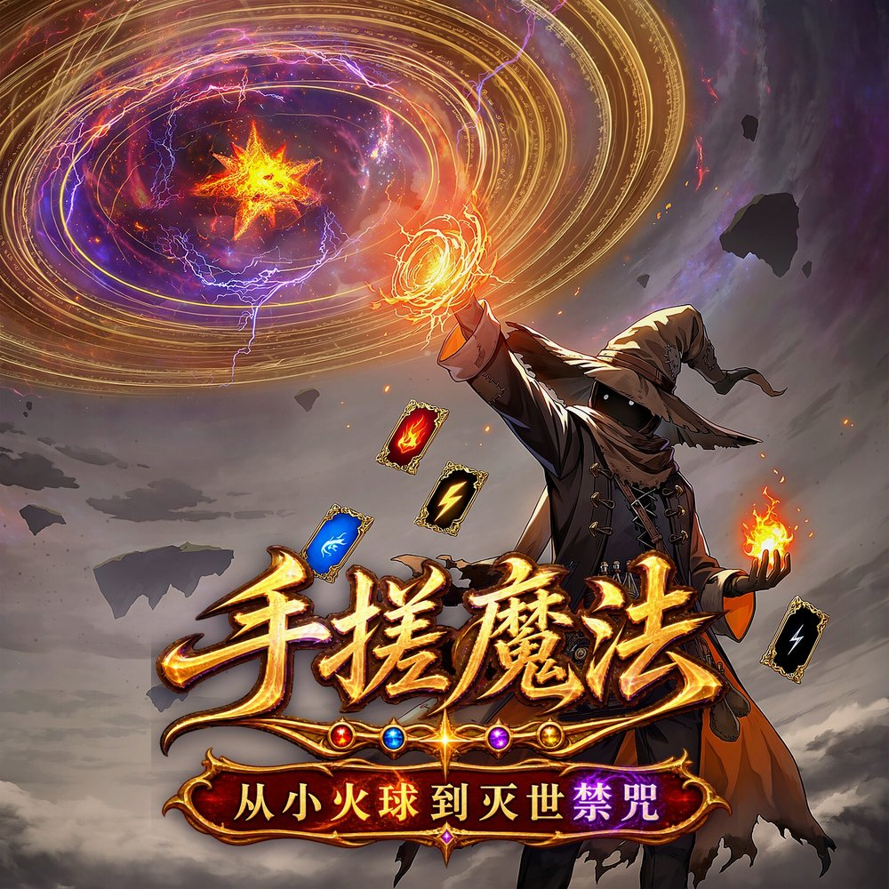
主视觉：主角掌心一颗小火球，另一只手召下漫天禁咒，四色元素卡环绕 —— 标题的承诺和核心玩法在一张图里。图上只有完整标题，没有其他文字。
游戏截图（真实游戏画面，1080×1920）
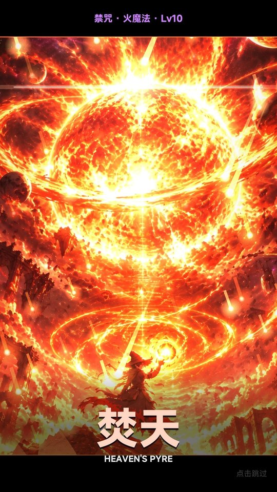
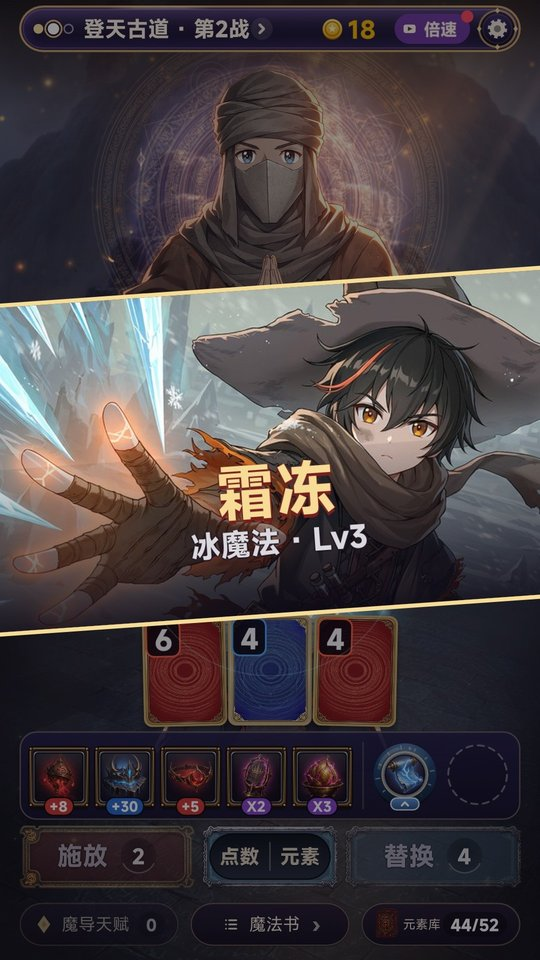
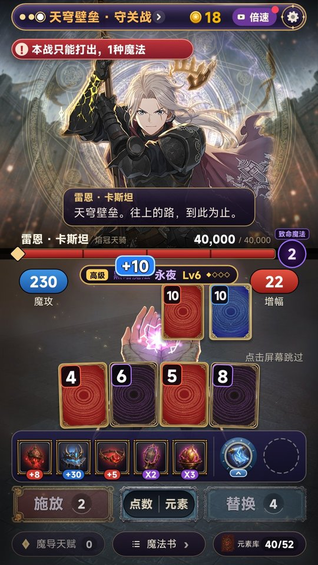
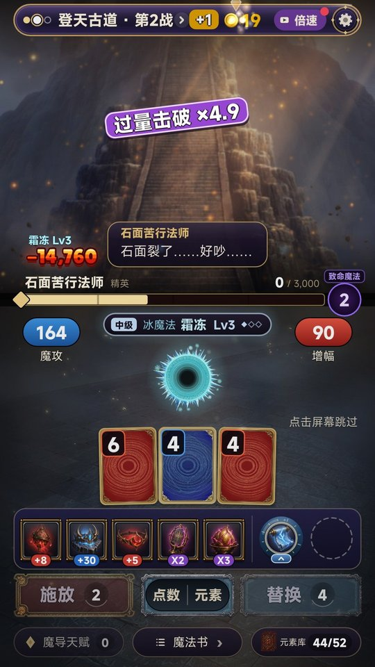
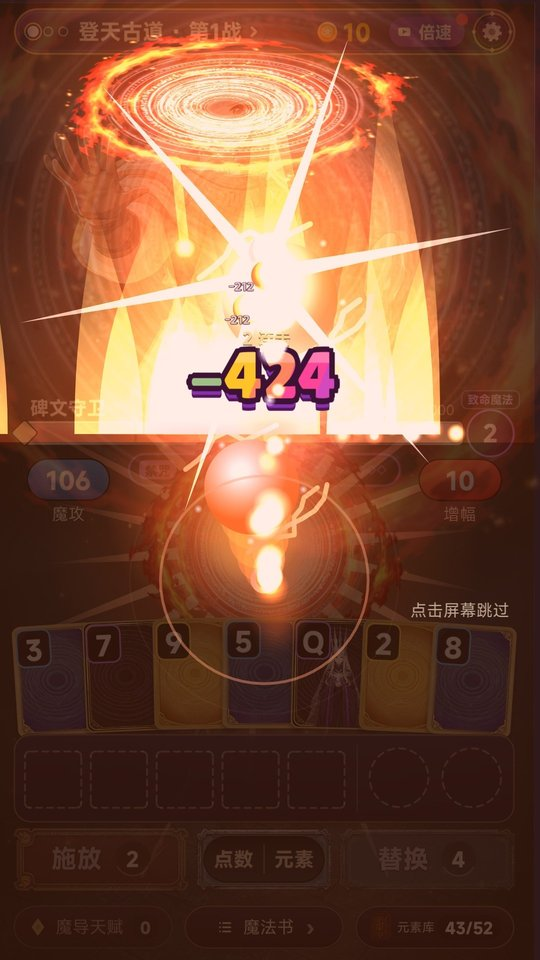
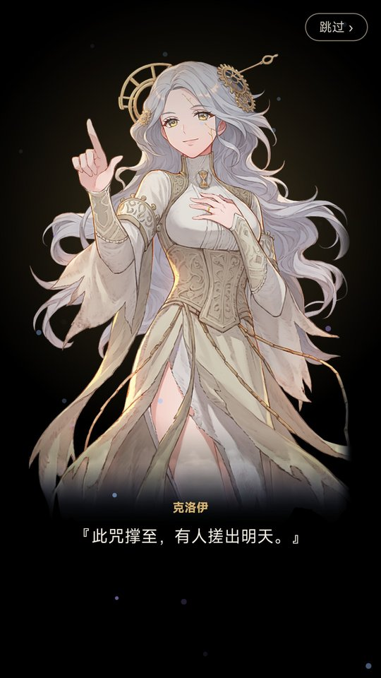
实机录屏（43 秒，1080×1920，只有游戏原声，第 1 秒就开始施法）
焚天禁咒 → 普通战斗霜冻切入、过量击破 → 守关战雷恩登场与永夜 → 敌人的致命魔法。
文案
首页推荐语：一手元素卡，搓出从小火球到灭世禁咒的魔法
简介 / 开发者的话：已写入后台草稿，全文见仓库 store/listing.md。
五、下一步
- 你确认本页（尤其 CG）后：提交代码、绑定最新包体、上传截图和录屏。
- 提交「预约」审核。同厂商峡谷之巅 11-05 刚首发，24 小时首发窗口要到 北京时间 11-07 02:41 之后，所以预约定时在 11-07 上午开启。
- 不会上线，上线另找你确认。
还需要你提供：玩家 QQ 群（群名 / 群号 / 链接，可选）；资料声明确认：不需联网、无内购、含 AI 生成内容（美术和配音）、无 IP 授权。